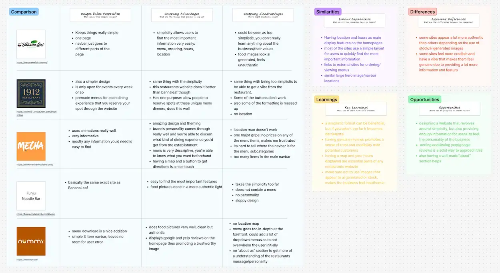
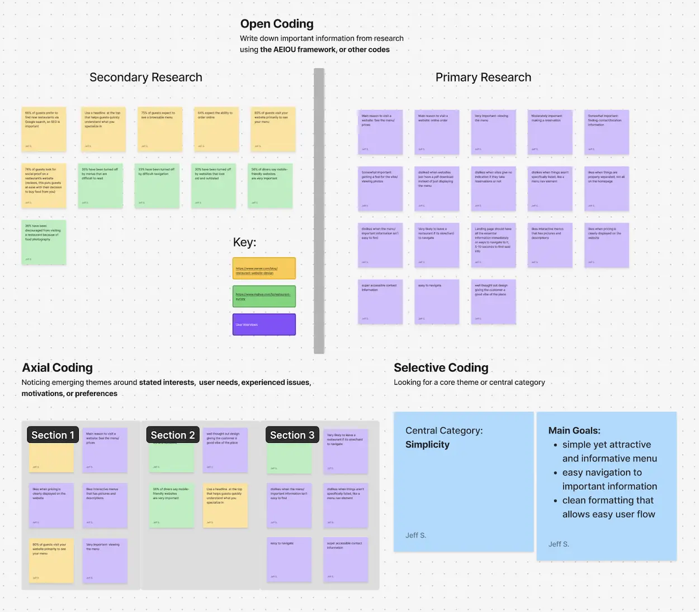
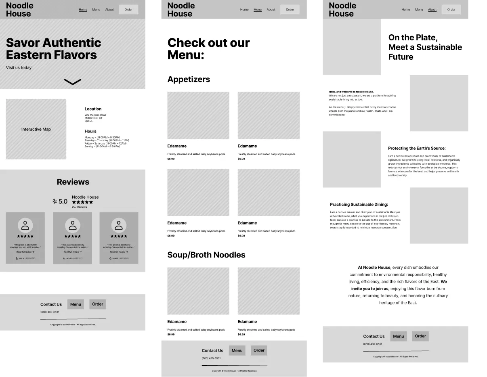
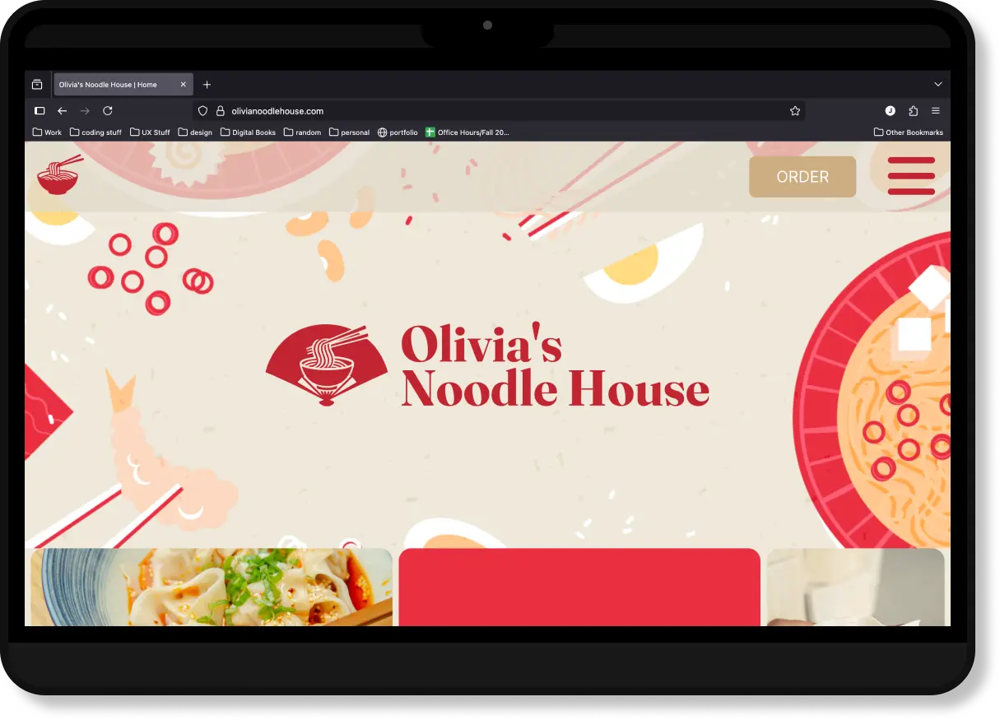

Olivia's Noodle House
A UX-driven website created as the digital presence of a local business, fostering brand visibility and customer engagement
An Overview
With the many website builders available to business owners today, many small businesses are increasingly establishing their online presence, yet having these tools doesn’t guarantee a site is accessible, usable, and aligns with customer needs. When a friend referred me to work with one of my local area’s restaurants, I knew I could design and develop a website that would meet their expectations as well as their users.
Through secondary and user research, I created a design that encompassed clarity and mobile responsiveness so customers could get the information they needed without frustration.
ROLE
UX Designer/Researcher | Web Developer:
Conducted UX research, UI design, and implemented said design over the web
TIME
August 2025 - September 2025
TOOLS
Figma, Figjam, Google Forms, VSCode, Hostinger, Adobe Illustrator, Notion
PROBLEM
Inconsistent usability and accessibility across small restaurant websites
Even with access to modern website builders, small businesses still struggle to create a user-friendly website. This leaves customers unable to find critical information, confused by navigation, or experiencing a poor mobile experience.
THE SOLUTION
Creating a UX-based website design
Initial double navigation
- Makes it easy for users to find the information they need quickly without guessing
- Reduces confusion by showing multiple paths to desired content
- Overall usability/visibility is improved for first-time customers exploring the site
Large hit areas
- Causes interactive elements to be easier to select on mobile devices
- Reduces user frustration and accidental mis-taps
- Increases accessibility for users with motor issues
Responsive design across devices
- Improves usability by preventing the need to scroll sideways or pinch to zoom
- Reduces confusion by creating a consistent experience if a user is accessing the site on different screen sizes
- Future-proofs the website for new screen sizes
LITERATURE REVIEW
56% express the importance of restaurants having mobile-friendly-websites
Through some general research, I found that surveyed diners had many problems with various restaurant website features, with one of the major ones being responsiveness (MGH, Inc.). Moreover, I found that:
"Off-Premises orders now account for a majority of restaurant occasions and will continue to grow," and "New technology is a critical enabler of growing off-premises sales" - (National Restaurant Association, 2019)
COMPETITIVE ANALYSIS
Simplicity is a prevalent trend among restaurant layouts
I analyzed 5 websites I found most relevant to the type of site I'm trying to design and found that each provided its strong and weak points, but the common theme was having more simple/minimal layouts. Thus thus allows their customers to easily find the critical features that they are looking for.
 View in FigmaUSER SURVEY
Restaurant goers place a strong valuation on straightforward navigation
I sent out a usability survey to further develop an understanding of what turns people off from using a restaurant's website/what frustrates them. As well as to get more information on what features customers value the most.
SURVEY QUESTIONS:
- What's the main reason you would visit a restaurant's website?
- How important do you feel the following elements are when you go to the website of a restaurant?
- Viewing the menu
- Placing an online order
- Making a reservation
- Finding contact/location information
- Getting a feel for the vibe/viewing photos
- How likely are you to leave a restaurant's website if it's slow or hard to navigate?
- In general, what's one thing you would improve about restaurant websites?
THE MAIN INSIGHT
Concise, straightforward navigation combined with a minimalistic site layout
After considering my prior research and completing an affinity map, I concluded that to provide Olivia's Noodle House with a proper website that will foster the best brand image, while retaining customer engagement, I will need to focus on a more simplistic yet concise site design. This would clearly highlight all the important features that a restaurant site needs to provide a great user experience.
 View in FigmaDESIGN
Initial direction
Combining my research findings, inspiration from other websites, and my personal design preferences, I developed an initial set of wireframes for a typical restaurant site layout. In this design, I emphasized the restaurant’s location and hours by placing them directly below the hero image. Additionally, I included a Yelp review section to build trust with site visitors.
CHANGES
2 significant changes in my designs
After coming back and re-evaluating my wireframes after a week, I decided to make some major changes to make the site more unique, memorable, and usable. These changes aimed to improve usability while giving the site a distinctive visual identity.
Swapped out the location section for a secondary navigation section
- This navigation section was a lot more visually appealing and provided more value than the location/hours information (realized this information is easily found on restaurants’ Google Business pages, so no need to highlight them on the homepage)
- In addition to providing more usability, it shows off related imagery, which gives users a better sense of the restaurant experience
Changed the menu to a fixed scrolling menu with a linked image slideshow
- Offers a more engaging and distinctive experience compared to a typical scrolling menu
- Syncing with the image slideshow reduces cognitive load since users don’t have to scroll back and forth to compare items or images
- Due to the menu being visually appealing and unique, this could reduce user bounce rate
THE FINAL PRODUCT
 View the Live SiteCONCLUSION + LESSIONS LEARNED
Opportunities for improvement
With this project, it was a chance for me to test how well I could apply my prior learning to designing/building a website from scratch. I think I did well and found the whole learning process, from UX research and design to development and implementation, to be extremely valuable in shaping me into a more well-rounded designer.
Success metrics
Due to this being a fresh website and not a redesgin, I don't have prior data for comparison. Here are some metrics I will be intermediatly tracking to see how the site is preforming.
- Task Completion Rate: Measures how many users successfully complete key actions on the site, like finding product info or going to the order page.
- Average Session Duration: Shows how long users are spending on the site, demonstrating engagement with the content.
- Bounce Rate: Tracks the percentage of visitors who leave after viewing only one page, helping identify navigation or usability issues.
- Click-through on Key CTAs: Measures how often users interact with important calls-to-action, like "Order Now" or "Menu." This thus showing the effectiveness of site design in guiding users.
Lessons learned
- Tool selection matters. After initially viewing this project as an opportunity to learn how to use a website block builder (WordPress), I realized, after spending around 10 hrs learning and designing with the software, that it was slowing me down. Switching to coding the website directly allowed me to leverage my existing skills and complete the project more efficiently.
- Don’t underestimate small usability tests. Quick feedback from a few friends or my instructors revealed usability and design issues I hadn’t noticed. This reinforced how valuable small-scale testing can be for catching overlooked problems.
- Managing time across multiple roles. Conducting research, designing, and developing a website has taught me the importance of setting realistic goals. Moreover, breaking a project into smaller milestones allowed me to present tangible deliverables to the client, enabling them to be consulted throughout the project's progression.
Appreciate you reading through!
For any inquiries you feel free to contact me at jeffrey.jspang@gmail.com